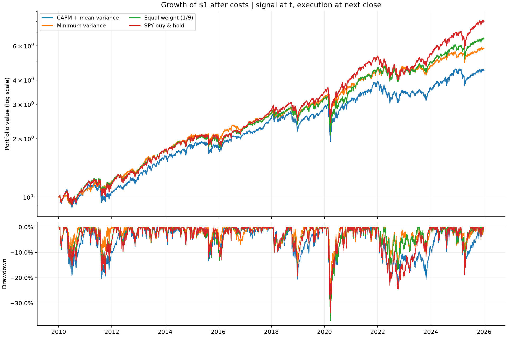
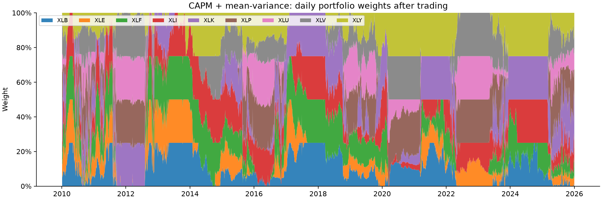

REPRODUCIBLE RESEARCH · DAILY · NO LIVE ORDERS
CAPM 기반 일별 자산배분 시스템
2010-01-04 — 2025-12-31 · 실제 ETF 조정 종가 · USD · 거래비용 반영
투자 가설: 개별 차트 신호 대신 시장 민감도와 자산 간 공분산으로 보유 비중을 정한다. 기대수익만 높이는 것보다 위험과 집중도를 함께 관리한다.
실험 결과
CAPM 전략의 연복리수익률은 9.84%, 최대 낙폭은 -35.64%입니다. 이 기간 SPY의 연복리수익률보다 낮았습니다. 이 수치는 아래에 고정한 조건의 과거 모의 결과이며 미래 성과를 보장하지 않습니다.
연복리수익률: 복리로 환산한 연평균 수익 · 연변동성: 일별 수익률의 흔들림을 연율화 · 샤프지수: 무위험수익 대비 위험조정성과 · 최대 낙폭: 이전 최고점 대비 최대 하락 · 연회전율: 연간 매수+매도 금액/거래 직전 자산의 합계(양방향). 비용 5bp는 거래금액의 0.050%입니다.

어떻게 비중을 정하는가
- 직전 252거래일로 각 ETF의 시장 베타와 공분산을 추정합니다. 시장은 SPY, 무위험수익률은 Kenneth French 일별 RF입니다.
μᵢ = RF 평균 + βᵢ × 시장 초과수익 평균으로 기대수익을 추정하고 연율화합니다. CAPM의 알파는 0으로 둡니다.max μᵀw − λ/2 × wᵀΣw를 풉니다. λ=5, 비중 합계 100%, 공매도·차입 없음, 자산당 최대 25%, 공분산 대각 축소 10%입니다.- t일 종가까지 관측 → t+1 거래일 종가에 체결 → t+1에서 t+2로 가는 수익부터 새 비중에 반영합니다. 첫 체결 전에는 현금입니다.
수익률 추정 기간과 파라미터는 결과 확인 전에 정했고, 이 실행에서 성과에 맞춰 탐색하지 않았습니다. 2010년 이후는 매일 과거 구간만 쓰는 순차 검증 구간입니다. 보유 비중과 달라진 금액만 매수·매도합니다.

기간별 확인
거래비용 민감도
비중 신호를 그대로 두고 비용만 바꿉니다. 비용을 최적화 목적함수에 넣지는 않았습니다.
연도별 수익률
재현과 추적
원시 응답·가공 CSV의 SHA-256을 검증한 후 실행했습니다. 데이터 스냅숏: a0a608d85e10b574…. 모델 설정은 run.json, 수치는 metrics.json, 날짜별 성과는 curve.csv, 매수·매도는 trades.csv, 추정치는 signals.csv에서 확인할 수 있습니다.
해석의 범위
가격은 Yahoo Finance의 사후 조정 종가입니다. 배당·분할을 반영한 수익률의 대용치로 쓰며, 체결 원장은 분수 단위의 조정가격 기준 연구용 수량입니다. 실제 주식 수량이나 증권사 체결 이력이 아닙니다. 배당 현금을 별도로 더하지 않습니다. 매도와 매수 모두 다음 종가에 전량 체결된다고 가정하며 스프레드·슬리피지는 고정 비용에만 근사합니다. 세금, 시장 충격, 호가·거래량 한도, 주문 거절, 공휴일 주문 처리는 모델링하지 않았습니다.
현재 선택한 9개 기존 섹터 ETF와 SPY에 대한 실험으로, 전체 상장·상장폐지 종목을 다룬 생존편향 없는 주식 선택 검증은 아닙니다. 현대 섹터 구성과 완전히 같은 분류도 아닙니다. 조정가격과 RF는 당시 입수본이 아닌 현재 다운로드본이므로 소급 수정과 배당 시점 처리의 한계가 있습니다. CAPM의 단기 기대수익은 매우 불안정할 수 있습니다.
기존 OMS는 별도의 모의 주문·중복 방지·대사 시연이며 이 연구 원장과 연결되지 않았습니다. 현재 OMS의 정수 주식 지정가 매수 제한과 달리 이 백테스트는 연구용 분수 단위 매수·매도를 지원합니다. 실거래 연결은 제출 범위 밖입니다.
출처: Yahoo Finance historical data · Kenneth French factors · SciPy SLSQP